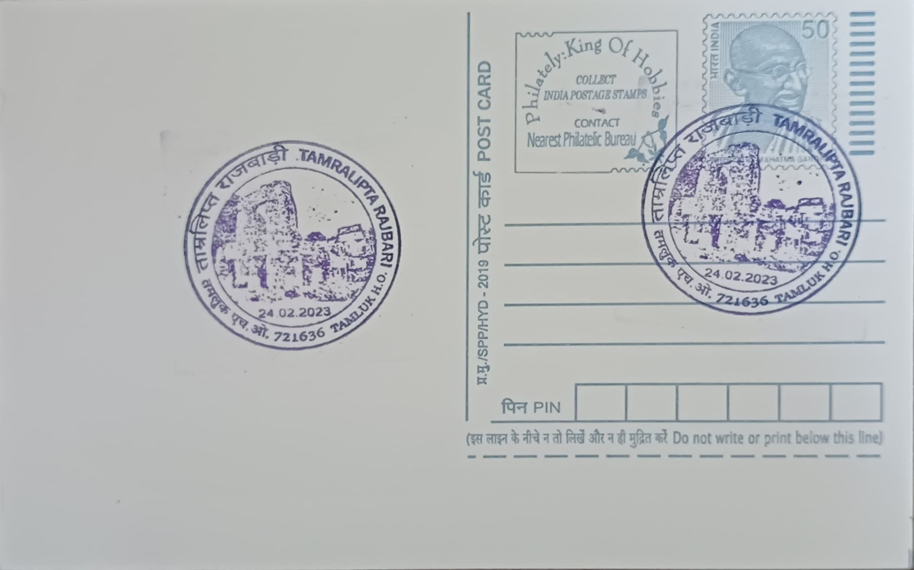

Tamralipta Rajbari
তাম্রলিপ্ত রাজবাড়ি


The name Tamralipta Rajbari derives from Tamralipta, or Tamralipti, the ancient port city on whose site modern Tamluk stands, its name traditionally linked to the copper-coloured (tamra) silt deposited by the Rupnarayan river at its mouth. The settlement's antiquity is attested in early Indian texts, in Greek geographical accounts, and in the travel records of the Chinese Buddhist pilgrims Fa-Hien and Xuanzang, who both passed through the port and described it as a departure point for voyages to Sri Lanka and Southeast Asia. The Rajbari, meaning literally "royal house" in Bengali, takes its name from this continuity, marking the site where successive local rulers maintained their seat long after the port itself had receded in importance.
As a monument, the Tamralipta Rajbari belongs to the category of ruined royal residences that survive as centrally protected heritage sites, administered under the Archaeological Survey of India while the surrounding land remains in private ownership. Its significance is twofold: it is one of the few physical structures in the Tamluk area linking the region's documented antiquity as a Mauryan- and Gupta-era maritime and Buddhist centre to its subsequent life as a seat of local kingship, and it stands within a town that later became a flashpoint of the independence movement. The complex is popularly described as being of great age, with local tradition attributing a history stretching back some 2,500 years, though the surviving built fabric reflects a much later period of construction and repeated rebuilding.
The surviving Rajbari structure is laid out around a large courtyard, with a double-storeyed, barrack-like range of rooms along its flanks and a more elaborate frontal block featuring wide pillared openings and arches showing clear Islamic architectural influence, consistent with construction or substantial remodelling during the medieval and early modern periods when the area came under the sway of regional ruling families, including feudatories linked to the Bhanja rulers of the Mayurbhanj region to the west. The palace sits on the western bank of the Khat Pukur tank, in the stretch of land between the Rupnarayan and Subarnarekha rivers, a location that placed it close to the old riverine trade routes even as those channels silted up and the port function of Tamralipti declined through the medieval centuries.
Tamluk's most widely remembered historical episode is not ancient but modern: during the Quit India movement, local volunteers organised under the Tamluk Samar Parishad attempted to storm the town's police station on 29 September 1942, in the course of which Matangini Hazra, an elderly local activist known as "Gandhi Buri," was shot and killed while carrying the national flag, becoming one of the movement's most commemorated martyrs in Bengal. In the aftermath, the Tamralipta Jatiya Sarkar, a parallel national government, was formally established on 17 December 1942 and continued to function in the Tamluk region for roughly 21 months, running its own police, courts, and revenue administration independently of British authority before the area was brought back under colonial control.
In recent years, conservation authorities have drawn up plans for the Rajbari complex covering structural conservation, the exposure of buried portions of the site, removal of accumulated debris, and visitor infrastructure such as pathways, signage, and landscaping, with the proposed outlay for this work put at roughly Rs 185 lakh. The Rajbari today forms part of a cluster of heritage locations in Tamluk, alongside sites associated with the Jatiya Sarkar and the town's temples, that together draw history-minded visitors to a town whose layered past runs from Mauryan-era maritime trade through medieval kingship to twentieth-century revolutionary government.
| Date of Introduction | February 24, 2023 |
|---|---|
| Address | Senior Postmaster, |
| Tamluk HO, | |
| Purba Medinpur (dt.), West Bengal - 721636. |